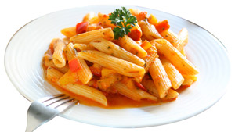

Penne al Pomodoro
Ingredienti:
Di seguito riportiamo gli ingredienti per preparare il nostro piatto
- 500g di Penne
- 600g di Pomodori
- Olio extravergine 2 cucch.
- 100g di parmigiano
- Aglio a spicchi
- Erbe aromatiche
Preparazione:
- Mettere su fuoco una pentola contenente acqua
- Soffriggere aglio e arbe aromatiche
- Versre i pomodori nella pentola
- scolare la pasta
- Versare la salsa sulla pasta
- Servire il piatto